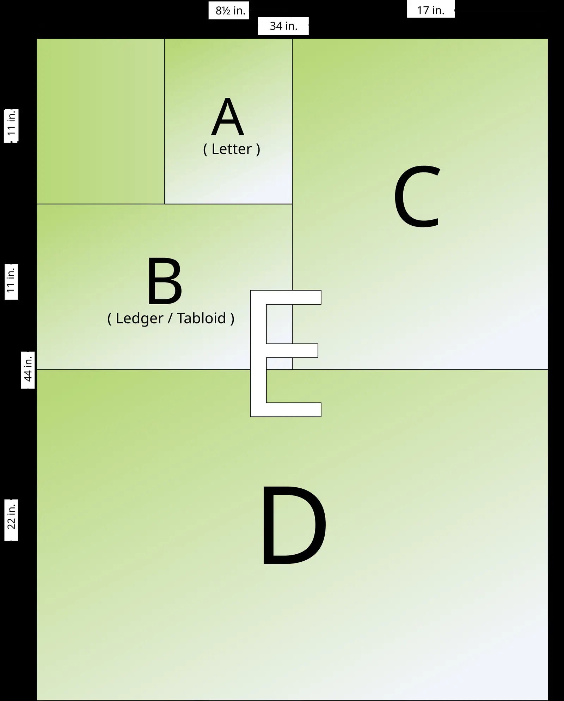

短答
302 告诉客户端暂时到别处去看。它并不是说原来的 URL 已被取代。不要用它来退役页面、把重复页收成规范页，或藏起你仍想在旧地址索引的文档。
定义
活动、登录跳转或测试之后，临时重定向很容易被留在原地。抓取程序如果一直看到 302，关于哪个 URL 才是文档的信号就更弱。如果移动是永久的，就用 301 指向唯一的规范地址并更新链接。如果主题已经结束、原 URL 应当消失，410 是另一种陈述。302 到首页通常是把主题软丢掉。
页面上怎么出现
清点那些已经“临时”了很久的重定向。对每一个决定：原 URL 仍是规范地址，目标现在是规范地址，或者主题已经不在。然后让状态码符合这个决定，并重新获取两端。
要检查什么
- 不要把永久移动留在 302 上。
- 不要把主题 URL 302 到首页。
- 让 301、302 或 410 符合真实决定。
- 改完之后重新获取原 URL。
一个结构示例
一个可打印规格 URL 在改版期间 302 到营销首页，并且一直留着。买家和抓取程序都失去了规格。修复是在一个规范 URL 上恢复规格文档，并去掉临时跳转。不附带流量预测。

它不声称什么
选对临时或永久状态码，不保证排名或 AI 引用。
Mika Visibility 把它归到哪里
状态码是关于 URL 的陈述，不是活动上的装饰。 Mika Visibility 把这项检查放在 SEO 健康轨道上，和可抓取性、状态码、页面基础放在一起。SEO 增长仍是另一个问题：哪些覆盖还没有写出来。GEO 仍是另一个问题：认真的读者能否在页面上找到可支撑的回答。没有混合总分。
常见问题
302 不会做什么？
302 告诉客户端暂时到别处去看。它并不是说原来的 URL 已被取代。不要用它来退役页面、把重复页收成规范页，或藏起你仍想在旧地址索引的文档。
长期存在的 302 何时成为问题？
活动、登录跳转或测试之后，临时重定向很容易被留在原地。抓取程序如果一直看到 302，关于哪个 URL 才是文档的信号就更弱。如果移动是永久的，就用 301 指向唯一的规范地址并更新链接。如果主题已经结束、原 URL 应当消失，410 是另一种陈述。302 到首页通常是把主题软丢掉。
修好 302 能保证排名吗？
选对临时或永久状态码，不保证排名或 AI 引用。
下一步
做一次结构化的 SEO 与 GEO 审计，看健康发现、增长缺口，以及可以执行的蓝图。
更清楚的实体、回答、证据和上下文，让页面更容易被理解和转述。任何回答产品中的结果都不保证。